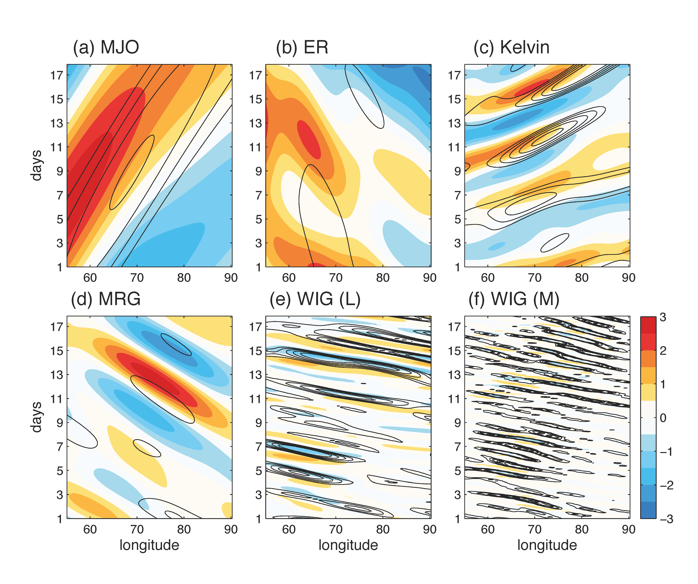
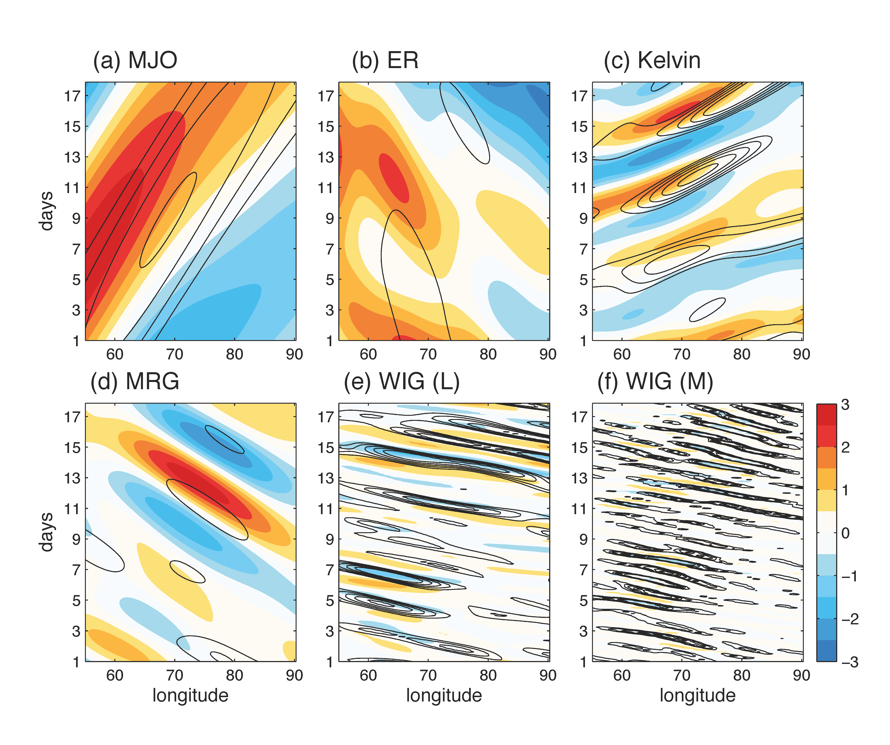

Tropical weather systems are important components of the global circulation that span a wide range of spatial and temporal scales. At large scales, the Madden-Julian Oscillation (MJO) is the dominant mode. At small scales, moist convective systems dominate. Atmospheric wave motion due to Earth's rotation and gravity fills the spectrum, including the equatorial Rossby (ER), Kelvin, mixed-Rossby-gravity (MRG), and inertia-gravity (IG) waves. The coupling between large-scale waves and small-scale moist convection makes the predictability of tropical weather both flow and scale dependent.
The figure on the left shows the Hovmöller diagram of tropical rainfall (mm/day) over a 20-day period, you can see the slow eastward-moving MJO and the fast westward-moving IG waves. If we extract the wave components through space-time filtering, we got something like the figure on the right (contours are rainfall and blue/red shadings are \(u\)-wind).
 

In my PhD work I identified the predictability limits for tropical atmosphere, establishing an upper bound in expected prediction skill of these weather systems. I also addressed the questions of how much future satellite observations can improve the prediction skill, and how to design ensemble data assimilation methods that make better use of the available observations.
Intrinsic vs. practical predictability of the multiscale tropical weather system
In Ying and Zhang 2017, we estimated the predictability of tropical weather through ensemble perturbation experiments using the Weather Research and Forecasting (WRF) model. The practical predictability limit is estimated with realistic initial and boundary condition uncertainties sampled from the operational global model forecasts. Predictability limit is reached when the ensemble spread is indistinguishable from random climatological draws. Intrinsic predictability is estimated from the same ensemble but with much reduced initial uncertainties (1% of realistic forecast errors) to mimic a near-perfect scenario. The figure below shows the ensemble spaghetti plots of Hovmöller diagrams for each wave component. The different colors indicate different ensemble members.

This figure summarizes the predictability limits estimated from the ensembles. Thick lines are practical predictability limits (days) plotted as a function of spatial scales (wavelength). Thin lines are the intrinsic predictability limits.
Results indicate that predictability is scale dependent. There is a sharp transition from slow to fast error growth at the intermediate scales (~500 km), separating the more predictable large-scale components (~2 weeks) from the less predictable small-scale components (<1 day). The intrinsic predictability limits are >2 weeks for larger scales and <3 days for small scales. Currently, there is still room for improving the prediction skill before hitting the intrinsic limit.
Potential improvement from assimilating satellite observations
In Ying and Zhang 2018, we evaluated the potential impact from current/future satellite observations in an Observing System Simulation Experiment (OSSE).
This figure shows the observing networks that we evaluated, including temperature and moisture profiles retrieved from the Advanced TIROS Operational Vertical Sounders (ATOVS) and the GPS Radio Occultation (GPSRO) technique. Future CubeSat launch will boost the resolution of GPSRO, whose potential impact was also evaluated.
We showed that the current temperature, humidity profiles and wind vectors retrieved from satellite data can extend the skillful forecast lead time by as much as 4 days for the larger scales.
Figure below shows error statistics from the experiment. First row shows the error time series, second row shows vertical profiles, and third row shows error power spectra for (from left to right columns) difference kinetic energy (DKE), temperature, water vapor (Q) and hydrometers (ice+snow+graupel) errors.
While large-scale component can be well constrained using these observations, the convective scale still lacks spatial resolution to obtain enough information. Better design of observing networks is still necessary to further improve tropical weather predictability. With prospective improvement in resolution and complementary sampling strategies, the prediction skill can be further improved, especially for the smaller scales. These results shed lights on the need, design and cost-benefit analysis of future observing systems for better tropical weather prediction.
See more details in my PhD Dissertation (PDF).